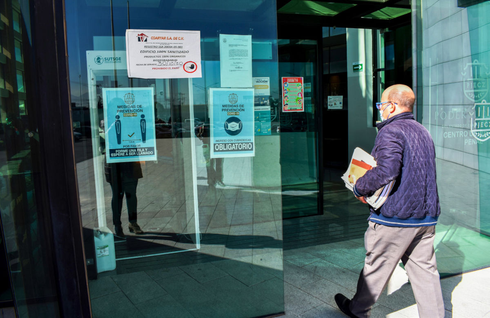
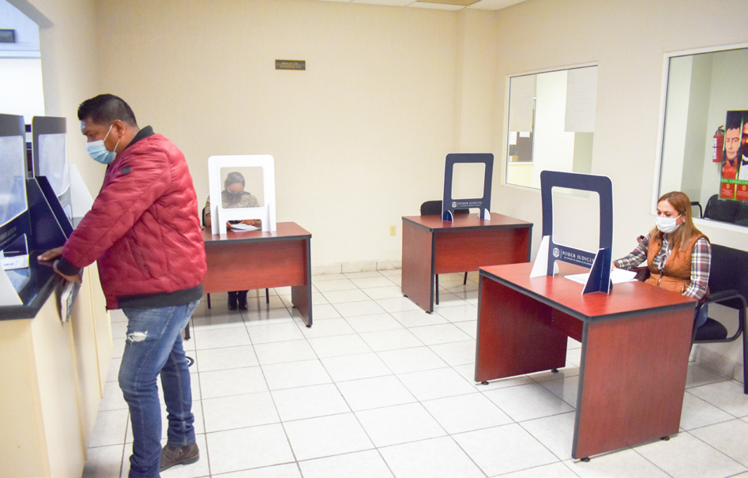
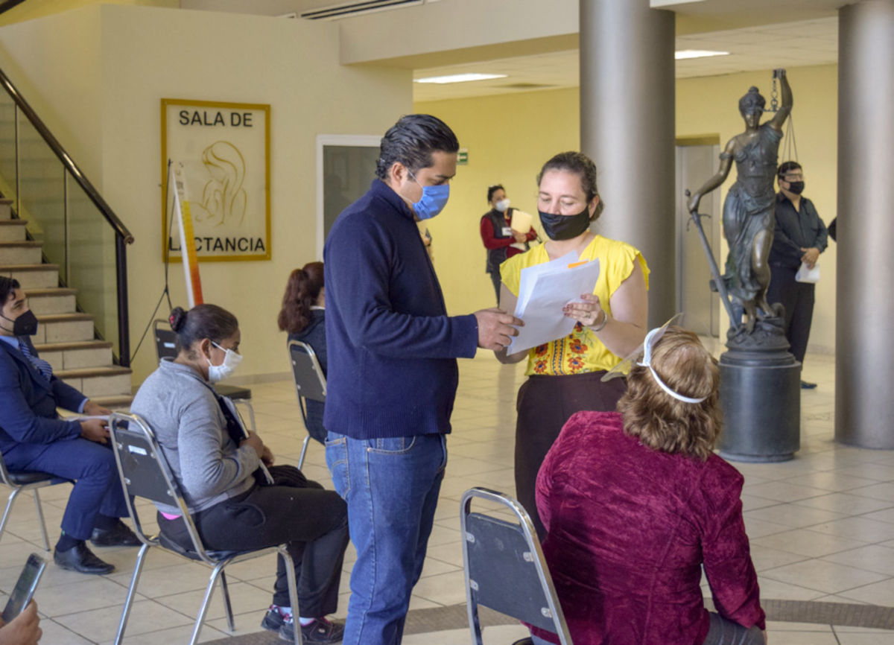

La pandemia no solo nos impulsó a la mejora tecnológica, sino que también mostró el grado de compromiso de nuestro personal. En Coahuila la justicia nunca se detuvo y se aplicó eficazmente pese a las condiciones adversas, bajo estrictas medidas sanitarias.
En el Poder Judicial del Estado trabajamos en la implementación de un nuevo Modelo de Justicia que nos permita ofrecer a la ciudadanía el acceso a una justicia pronta y expedita, a fin de que las y los ciudadanos gocen de todas las prerrogativas que le reconocen tanto los tratados internacionales, como nuestra Carta Magna.
Sabedores que nuestra sociedad es totalmente dinámica y por esa misma razón requiere de la justicia más completa e integral, nos enfocamos en ofrecer un Sistema Judicial que sea también profesional, medible, innovador, transparente y abierto.
Durante el 2020, a nivel global la sociedad se enfrentó a una situación extraordinaria originada por la propagación del virus denominado SARS-CoV-2 (COVID-19), el cual fue catalogado por la Organización Mundial de la Salud (OMS) en marzo como pandemia.
Ante esta inesperada emergencia sanitaria se tomaron importantes determinaciones para evitar en mayor medida la transmisión masiva del virus, y una de las más importantes fue la suspensión de actividades en los sectores público, social y privado que involucraran la concentración física, tránsito o desplazamiento de personas.
Sin embargo, la administración de justicia es una obligación por demás importante que un Estado de Derecho debe garantizar a las personas. De acuerdo a lo plasmado en el artículo 17 de la Constitución Política de los Estados Unidos Mexicanos, tener acceso efectivo a la justicia es un derecho fundamental, por lo que en el Poder Judicial de Coahuila adecuamos la manera en la que normalmente se prestaban nuestros servicios al interior de los órganos.

En este sentido, el Consejo de la Judicatura emitió los acuerdos propios del sistema de justicia local, en cumplimiento a los estándares sanitarios y de Derechos Humanos sobre la justicia y la enfermedad COVID-19. Este órgano, a través del Acuerdo C-048/2020, procedió a regular las actividades jurisdiccionales durante la suspensión, implementando el trabajo a distancia; además se instauraron roles de guardias en los juzgados penales y familiares para la atención de casos urgentes, asegurando en todo momento la utilización de medidas sanitarias. Así, garantizamos en armonía los derechos de acceso a la justicia y la salud.
Posteriormente, el 13 de mayo, el propio Consejo de la Judicatura aprobó los acuerdos respectivos que sustentan los protocolos a seguir para el acceso a los edificios del Poder Judicial, y para la atención de los órganos jurisdiccionales y administrativos, una vez reanudadas las actividades. Estos fueron reforzados el 21 de agosto, mediante el Acuerdo C-109/2020.
También, en sesión celebrada el 29 de septiembre, el Consejo de la Judicatura del Estado emitió el Acuerdo C-118/2020 relativo a la aprobación de las visitas judiciales ordinarias del año 2020, las cuales se modificaron durante la emergencia sanitaria.
En concordancia a los acuerdos aprobados por el Consejo de la Judicatura y con sustento en lo dispuesto por los artículos 14, fracción XXIII, y 57, fracción VIII, de la Ley Orgánica del Poder Judicial del Estado de Coahuila, el Presidente del Tribunal Superior de Justicia, Magistrado Miguel Felipe Mery Ayup, tuvo a bien emitir otra serie de acuerdos a fin de contar con más instrumentos normativos que reforzaran el marco de actuación, durante la emergencia sanitaria, de los órganos adscritos a este poder.
Así, en fecha 6 de abril, el Magistrado Presidente emitió un acuerdo a fin de regular las cuestiones urgentes en materia familiar, mediante el cual se buscó privilegiar las convivencias entre padres e hijos a través de medios electrónicos, lo que permitió la comunicación efectiva entre el infante y su padre o madre, con el propósito de cumplir con el principio del interés superior de la niñez. Con esta innovadora forma de garantizar el ejercicio de los derechos de los infantes y la flexibilidad de la comunicación fue posible armonizar el derecho a la salud y el bienestar de la población en general.
Por otra parte, en esa misma fecha se emitió el acuerdo referente a la celebración de audiencias en materia penal con el objetivo de llevarlas a cabo mediante videoconferencias, conforme al marco normativo aplicable y garantizando el acceso a la justicia y los derechos de las partes. A nivel nacional, el Estado de Coahuila de Zaragoza fue pionero en prever la normatividad que garantiza el principio constitucional de máxima publicidad, al facilitar el acceso a las audiencias por videoconferencia mediante el uso de plataformas digitales. La utilización de los medios técnicos disponibles permitió dar mayor agilidad, exactitud y autenticidad.
Posteriormente, el 13 de abril, se pronunció por parte del Magistrado Presidente el acuerdo respectivo a fin de celebrar las sesiones del Pleno del Consejo de la Judicatura a través de medios digitales, para tomar las providencias necesarias en aras de garantizar a la sociedad el derecho fundamental de acceso a la justicia y para adoptar medidas acordes con los lineamientos que fijaron las autoridades de salud. Esto, con la finalidad de evitar la propagación del virus, cuidar la salud de la ciudadanía y de nuestro personal.
El 11 de mayo, el Magistrado Presidente aprobó el acuerdo respectivo para reforzar las medidas y protocolos sanitarios dentro del Poder Judicial, conforme a lo que en el momento implementaron las autoridades nacionales y estatales en la materia.
En este acuerdo se decidió que, a fin de privilegiar la salud de las personas servidoras públicas y el trabajo a distancia, la inspección judicial se lleve a cabo rindiendo un informe por parte de los órganos jurisdiccionales, que finalmente analiza y estudia la Visitaduría Judicial General.
Estas medidas nos permitieron construir soluciones que van más allá de la presente problemática, y por ello el Plan de Acción ante el COVID-19 estableció estrategias que pudieran satisfacer las necesidades manifiestas desde tiempo atrás, pero que con la contingencia se hicieron más palpables.
Este Plan de Acción se dividió en siete ejes de actuación que nos permitieron a su vez definir una serie de objetivos específicos y líneas de acción, que precisaron las actividades a realizar dentro de cada uno de los órganos que integran el Poder Judicial durante la etapa de la emergencia.
Cada uno de los ejes trae consigo un fin primordial, de acuerdo a las necesidades más apremiantes en este poder público:
Atención a los casos urgentes.
A pesar de la suspensión temporal de las actuaciones judiciales, debido a la naturaleza de algunos asuntos relativos a las materias penal y familiar, que son considerados como casos urgentes, se fijó un rol de guardias que permitiera la debida atención de estos asuntos.

Uso y aprovechamiento de la tecnología en la administración de justicia
Establecimos una serie de acciones a fin de dirigirnos a la ruta de la innovación, la cual nos permite contar con un Sistema Judicial moderno y de avanzada, en donde los usuarios puedan realizar actuaciones y consultas mediante plataformas digitales y otros mecanismos de comunicación a distancia.
Efectivo desahogo de las cargas procesales en los órganos jurisdiccionales
Establecimos acciones que permitieran que, ante la reapertura de los juzgados y tomando en consideración las recomendaciones sanitarias, se realice la proyección y emisión de las sentencias pendientes en cada uno de los órganos jurisdiccionales, así como su debida notificación. También desarrollamos un sistema de turnos y escalonamiento en la asistencia física del personal adscrito a esos órganos, mientras que el resto continuó con el trabajo a distancia.

Implementación de nuevos mecanismos para la recepción de recursos.
Diseñamos un instrumento de naturaleza administrativa denominado Buzón de Depósito de Demandas y Promociones, con el fin de incentivar la actividad laboral de los abogados litigantes ante los tribunales locales.
Sesiones virtuales de las salas colegiadas y otros órganos jurisdiccionales.
Establecimos acciones específicas que facilitan el desarrollo a distancia de las sesiones del Pleno del Tribunal Superior de Justicia, las Salas Colegiadas, el Consejo de la Judicatura y el Tribunal de Conciliación y Arbitraje, con el fin de que los acuerdos tomados en ellas cuenten con validez, y de esta manera evitar la reunión física de sus integrantes.
Capacitación y profesionalización en línea
Dirigimos acciones para la profesionalización de nuestro personal, abogados litigantes y servidores de otras dependencias públicas por medio de cursos virtuales, en cumplimiento a las disposiciones de distanciamiento social emitidas por las autoridades de salud.
Medidas sanitarias al interior de los órganos del Poder Judicial
Con el objetivo de evitar la propagación del COVID-19 y propiciar el ingreso seguro a los edificios que integran el Poder Judicial, realizamos acciones como: sanitización de espacios, medición de temperatura corporal, solicitar el uso de cubrebocas, mantener la sana distancia, moderar el ingreso de las personas y suspender el uso del reloj checador, entre otras.
A partir del 18 de mayo se reactivaron los plazos y términos procesales, lo que nos colocó como el primer Poder Judicial a nivel nacional en reabrir. Para lograr esto, el Consejo de la Judicatura emitió dos acuerdos más, uno para el acceso a los edificios durante la emergencia sanitaria, y otro más para el protocolo de actuación y atención en los órganos jurisdiccionales y administrativos de este poder.
Protocolo para el acceso a los edificios del Poder Judicial del Estado
Aprobado por el Consejo de la Judicatura el 13 de mayo de 2020, este protocolo establece (entre otras) las siguientes medidas:
- Protección de grupos vulnerables al COVID-19, tanto del personal como de los justiciables y litigantes.
- Mantenimiento de sana distancia.
- Uso obligatorio de cubrebocas.
- Asistencia de litigantes a juzgados solo en casos estrictamente necesarios, privilegiando las herramientas tecnológicas disponibles.
- En el caso de los órganos que atienden directamente a la ciudadanía, se permite el ingreso a una persona por familia o grupo, siempre y cuando no se encuentre dentro de un grupo vulnerable.
- Tratándose de litigantes que formen parte de un despacho, firma o institución, se permite a una persona asistir a los juzgados y tribunales.
- El personal del órgano jurisdiccional deberá vigilar que únicamente ingrese una persona de aquellas que estén autorizadas en el expediente, en el que sean los representantes de una de las partes.
- Solamente se permite el acceso a cada juzgado o tribunal a un máximo de tres personas, a la vez, externas al personal.
- El servicio de préstamo de expedientes en el Archivo Judicial General, en los archivos regionales y en el archivo de cada juzgado se realiza exclusivamente con cita previa.
- Cada órgano debe poner a disposición de las personas usuarias el número de contacto, correo electrónico o cualquier otro medio que tengan a su alcance para posibilitar la comunicación.
- Se deben instalar filtros de supervisión y toma de temperatura en las entradas de los edificios del Poder Judicial que sean sede de atención al público y a la ciudadanía en general.
- Establecimiento de sanciones por inobservancia por parte de servidores públicos del Poder Judicial.

Protocolo de actuación y atención en los órganos jurisdiccionales y administrativos del Poder Judicial del Estado
Para normar la actuación de los diversos órganos del Poder Judicial, el Consejo de la Judicatura estableció lineamientos entre los cuales destacan:
- Privilegiar el trabajo a través de las herramientas tecnológicas disponibles, incluidas las sesiones virtuales de audiencias o de los plenos de salas colegiadas y tribunales especializados.
- Priorizar la comunicación a distancia con litigantes.
- Las gestiones para la elaboración de oficios, exhortos o cualquier acto de naturaleza análoga pueden realizarse vía telefónica.
- Se establecen trámites con previa cita.
- Para su debida consulta, las Listas de Acuerdos de los juzgados deben ser incluidas en forma digital en el portal de internet del Poder Judicial.
- Se activan las notificaciones bajo estrictas medidas de protección para los actuarios.
- Se reanudan las audiencias, en su mayoría privadas y con medidas de sanitización previas y posteriores a cada una de ellas.
- Solo pueden participar tres personas de manera simultánea en la sala en el momento de la audiencia. En su caso, el juzgador puede auxiliarse de la tecnología si es necesaria la intervención de más personas.
- Sin perjuicio de lo anterior, pueden celebrarse a distancia por medio de videoconferencia las audiencias jurisdiccionales en los procesos orales (familiares y mercantiles).
- Respecto a la programación de audiencias, se debe privilegiar una fecha más cercana para aquellas que sean consideradas por el propio juzgador como de menor impacto; es decir, aquellas que de propias constancias judiciales permitan inferir que reunirán un menor número de personas, dejando para fechas más remotas aquellas de características contrarias.
- Las diligencias de inspección judicial, o cualesquiera otras que deban desahogarse fuera del recinto judicial, se pueden llevar a cabo siempre que, a criterio de la persona juzgadora, existan condiciones que permitan garantizar el estricto cumplimiento de las medidas y recomendaciones de sana distancia.